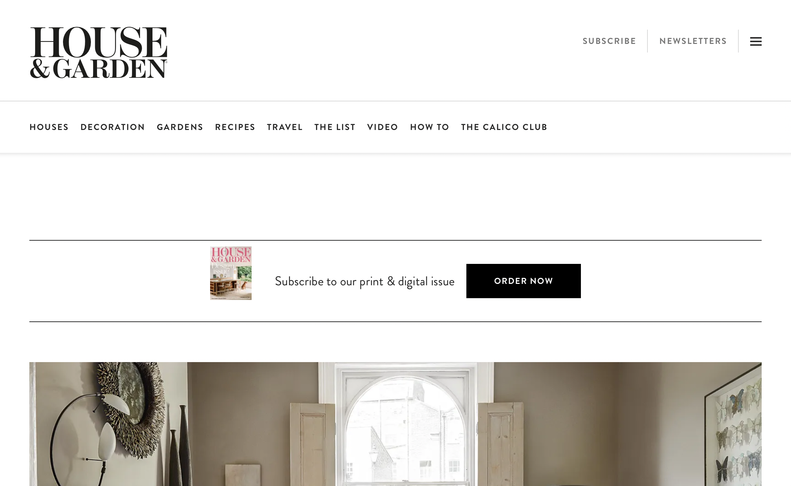

Dreamweaver

Adobe Dreamweaver is the standard when it comes to web design, most websites use it to program their sites and make them look nice. A very good example of a site made by Adobe Dreamweaver would be House and Garden (houseandgarden.co.uk). This website used its Grid feature to design a "newspaper" site.